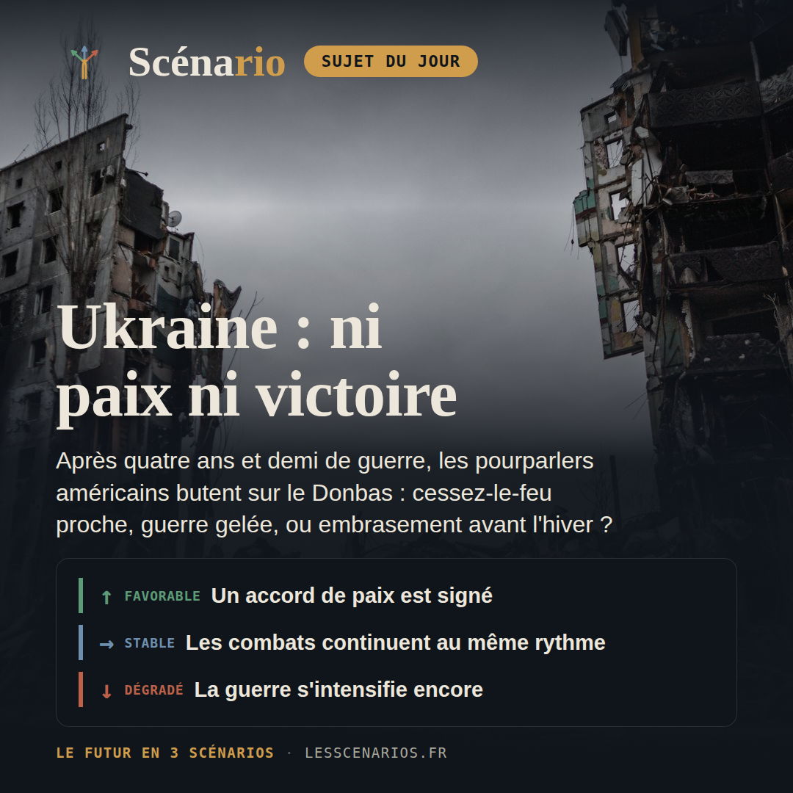
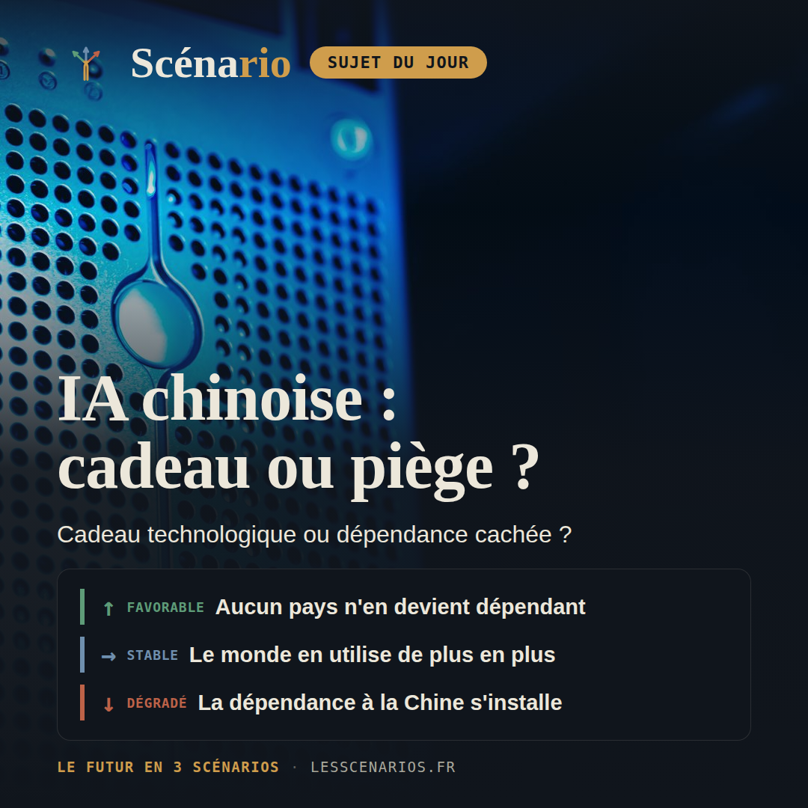
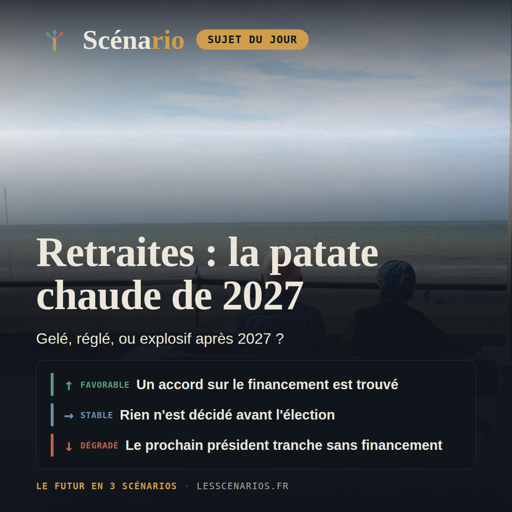
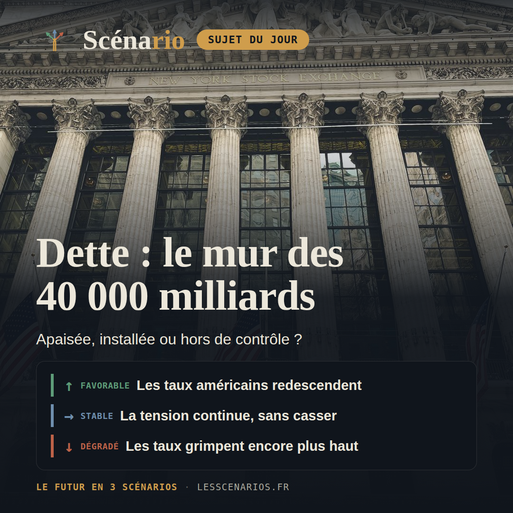
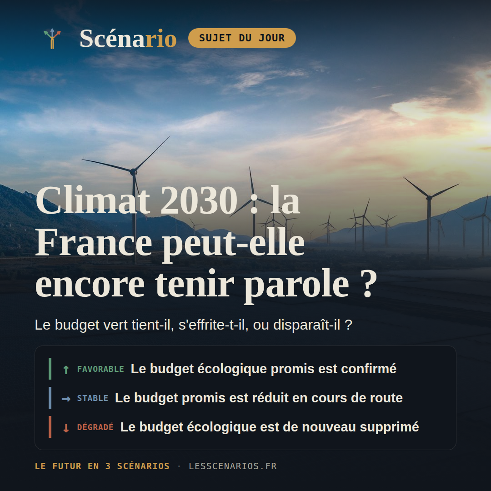
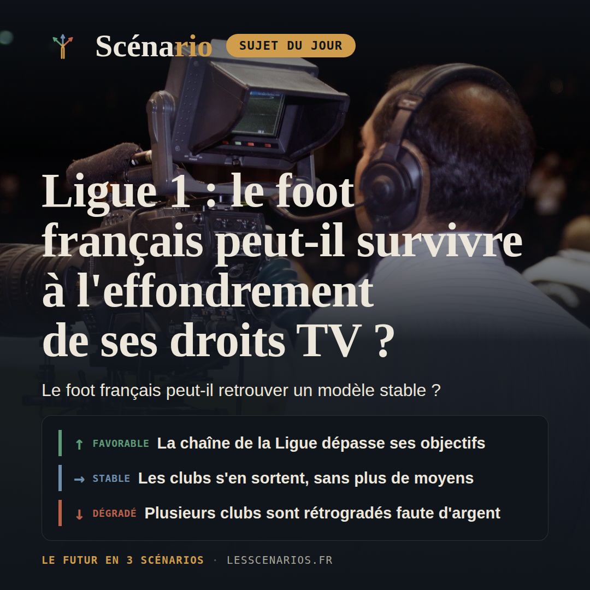

Récap hebdo
24 août au 30 août 2026 — sept sujets, sept fois trois scénarios chiffrés.
Conclusion de la semaine
Cette semaine, plusieurs dossiers lourds avancent sans se dénouer : en Ukraine, après quatre ans et demi de guerre, le front devrait s'enterrer pour l'hiver faute d'accord sur le Donbas ; le dossier des retraites reste gelé par la loi jusqu'en janvier 2028, sans qu'aucun camp n'ait intérêt à bouger avant la présidentielle ; le Fonds vert français, divisé par trois en deux ans, menace l'objectif de -50% d'ici 2030 ; et le taux des emprunts d'État américains à 30 ans a grimpé à son plus haut niveau depuis 2007, après la dégradation de la note du pays par les trois grandes agences de notation. Le fil commun de la semaine : des tensions anciennes qui persistent sans se dénouer, chacune renvoyée à son propre rendez-vous — électoral, budgétaire ou climatique.
Lundi, géopolitique

❓ Après plus de quatre ans et demi de guerre et des pourparlers dans l'impasse sur le Donbas, les combats vont-ils s'arrêter, rester bloqués sans vainqueur, ou repartir de plus belle avant l'hiver ?
20% Une trêve qui tient enfin
Washington obtient un accord : l'Ukraine cède le reste du Donbas contre des garanties de sécurité élargies, et les frappes cessent presque totalement.
45% Le front s'enterre pour l'hiver
Aucun accord n'est trouvé, le front reste globalement gelé, mais les frappes de missiles et de drones continuent au même rythme.
35% L'hiver de tous les dangers
Les pourparlers échouent, la Russie intensifie ses frappes sur le réseau électrique ukrainien avant l'hiver, et l'Ukraine réplique en profondeur.
Mardi, carte blanche

❓ La Chine offre-t-elle vraiment ses modèles d'intelligence artificielle en libre accès sans arrière-pensée, ou ce cadeau ouvre-t-il la voie à une dépendance technologique difficile à inverser ?
20% L'équilibre se maintient
Les laboratoires occidentaux rattrapent une partie de leur retard, la part chinoise du trafic mondial se stabilise sans continuer à grimper.
45% La dépendance s'installe doucement
Aucune bascule nette : l'adoption des modèles chinois continue de grimper progressivement, portée par leur prix très inférieur, sans rupture politique.
35% Le verrouillage devient irréversible
La dépendance s'accélère, des sanctions américaines tombent sur fond d'accusations de distillation, et Pékin resserre l'accès à ses meilleurs modèles.
Mercredi, actualité française

❓ Le dossier des retraites, suspendu par la loi jusqu'en janvier 2028, va-t-il rester gelé jusqu'à la présidentielle de 2027, ou s'invite-t-il déjà dans la campagne dès cet automne ?
20% Un compromis sort le dossier de l'ornière
Un financement mixte (cotisations, durée, protections ciblées) émerge de la campagne et devient une loi votée avant janvier 2028.
50% Le statu quo jusqu'à l'élection
Aucun camp ne cède avant 2027 : le dossier reste gelé jusqu'à son terme légal, laissé intact au futur président.
30% Un choix imposé sans financement
Faute d'accord, le vainqueur de 2027 impose une promesse de campagne non financée, sans les recettes pour l'équilibrer.
Jeudi, économie & finance mondiale

❓ Alors que le taux des emprunts d'État américains à 30 ans a grimpé à son plus haut niveau depuis 2007 et que les trois grandes agences de notation ont désormais toutes dégradé la note des États-Unis, le marché obligataire le plus important au monde peut-il encaisser cette pression sans faire basculer la dette mondiale dans une vraie crise de confiance ?
20% Le marché retrouve son calme
La Fed reprend une baisse mesurée de ses taux, le Trésor élargit ses rachats de dette, et un budget crédible rassure les investisseurs.
50% La tension continue, sans rupture
Le Trésor limite la casse au coup par coup, mais aucun compromis budgétaire crédible n'apaise durablement le marché.
30% Les investisseurs reprennent la main
Une adjudication ratée fait franchir 5,5 % au taux à 30 ans, et une vraie crise de confiance gagne d'autres marchés obligataires.
Vendredi, sciences

❓ Avec un rythme de réduction des émissions trois fois trop lent et un Fonds vert divisé par trois en deux ans, la France a-t-elle encore les moyens de tenir son objectif de -50 % d'ici 2030 ?
20% La rallonge promise passe l'automne
Le budget 2027 conserve le renforcement annoncé en juillet, le Fonds vert atteint 1 milliard d'euros et les rénovations repartent.
45% La rallonge s'effrite en chemin
Le Parlement adopte le budget, mais la ligne écologique est rognée comme l'an dernier — le Fonds vert retombe autour de 900 millions.
35% Le vert repasse à la trappe
Une nouvelle crise budgétaire ou politique efface le renforcement promis, et le Fonds vert retombe sous 700 millions d'euros.
Samedi, culture
❓ Les studios ont fixé une nouvelle règle commune : 45 jours d'exclusivité en salle avant le streaming. Le box-office mondial vise sa meilleure année depuis 2019, mais les grandes chaînes de cinéma restent lourdement endettées et les plus jeunes spectateurs préfèrent de plus en plus attendre le streaming : cette trêve suffira-t-elle à sauver durablement les salles ?
30% L'accord des 45 jours tient et s'allonge
L'accord tient chez tous les grands studios, Universal passe à sept week-ends d'exclusivité, et le box-office mondial dépasse 37 milliards de dollars.
45% L'accord des 45 jours se maintient, sans plus
L'accord tient globalement, mais aucun studio ne va plus loin — le box-office mondial se stabilise sans rattraper le niveau de 2019.
25% Un studio rompt l'accord, les fenêtres se referment
Un studio en difficulté casse l'accord pour doper sa plateforme de streaming, et le box-office mondial retombe sous 30 milliards de dollars.
Dimanche, sport

❓ Après l'effondrement des droits TV et la chute continue des ressources des clubs, la Ligue 1 va-t-elle retrouver un modèle économique stable, se maintenir tant bien que mal à ce niveau réduit, ou voir plusieurs clubs sombrer financièrement ?
20% Ligue 1+ dépasse son objectif d'abonnés
Ligue 1+ dépasse 1,3 million d'abonnés, un partenaire étranger complète les droits internationaux, et les clubs retrouvent un peu d'air financier.
45% Ligue 1+ progresse, mais sans rattraper son retard
Les abonnés progressent doucement vers 1,2-1,3 million, loin du seuil de rentabilité, pendant que les clubs continuent une gestion très stricte de leurs comptes.
35% Plusieurs clubs rétrogradés faute de comptes équilibrés
Les abonnés calent, les recettes TV domestiques repassent sous 150 millions d'euros, et la DNCG rétrograde administrativement au moins un club.